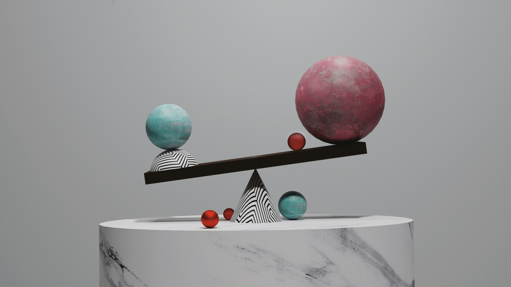

Featured Projects

Research Paper Writer
An LLM Pipeline that writes complete Research Papers on its own.

Research Paper Analyser
A RAG based offline model that analyse the Research Paper and answer the user questions.
Iris Flower Classification
A KNN based model that classifies the Flower into Setosa, Versicolor & Virginica.